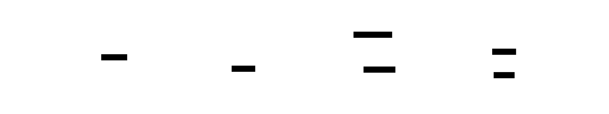
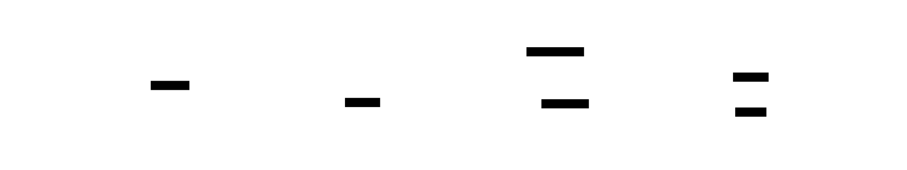

⊡ MAZE
Adaptive Constrained Code Generation
Abstract
Large Language Models demonstrate remarkable code generation capabilities, yet suffer from high error rates when generating complex, type-correct code. Unconstrained generation produces syntactically valid but semantically incorrect or type-unsafe code, requiring expensive post-hoc validation and multiple repair iterations.
MAZE introduces a paradigm shift: compile constraints before decoding, rather than hoping for correctness after generation. Through a novel 4-tier constraint hierarchy—syntactic (CFG grammars), type (inhabitation search), semantic (test-driven), and contextual (learned patterns)—MAZE guides LLM generation toward valid, type-correct, and project-conformant code from the start.
Built on research from PLDI 2025 (Type-Constrained Code Generation) and OOPSLA 2024 (Typed Holes), MAZE integrates with multiple LLM providers (OpenAI, vLLM, SGLang, llama.cpp) through llguidance for constraint enforcement, mnemosyne for persistent learning, and RUNE for sandboxed validation.
Current status: Core constraint system complete (Phases 1-3), validation pipeline in active development (Phase 4: 6/10 tasks complete), with adaptive learning and production hardening planned (Phases 5-6).
The Paradigm Shift
Traditional Approach: Generate, Then Fix
Generate (unconstrained) → Validate → Find errors → Fix → Repeat
# 3-5 iterations common
# High latency, token waste, context overflowMAZE Approach: Constrain, Then Generate
Build constraints → Generate (constrained) → Minimal validation → Done
# Correct by construction
# Single iteration, predictable costBy enforcing constraints during decoding rather than after generation, MAZE reduces error rates, minimizes repair iterations, and produces higher-quality code with less computational overhead.
Architecture
MAZE's architecture consists of five integrated stages that transform a code generation request into validated, type-correct code.
 

Stage 1: Context Indexer
Purpose: Extract structured information from source code to inform constraint synthesis
Status: Complete for TypeScript; Python, Rust, Go, Zig planned
- Extracts functions, classes, interfaces, type aliases
- Parses type annotations and generic parameters
- Detects project style and test patterns
Stage 2: Constraint Synthesis
Purpose: Build hierarchical constraints from indexed context and generation request
Status: Complete
- GrammarBuilder: Generates CFG grammars in Lark format
- TypeToGrammarConverter: Converts type constraints into grammar rules
- SchemaBuilder: Generates JSON Schema for OpenAI compatibility
Stage 3: Decode Orchestrator
Purpose: Generate code under constraints using provider-specific adapters
Status: Complete (OpenAI, vLLM, SGLang, llama.cpp)
Integration with llguidance for token-level constraint enforcement. Upstream performance: approximately 50μs per token mask computation.
Stage 4: Post-Validation
Purpose: Validate generated code across multiple dimensions in parallel
Status: 60 percent complete (6 of 10 tasks)
- SyntaxValidator: Language-specific syntax checking
- TypeValidator: Type checking via compiler APIs
- TestValidator: RUNE sandbox test execution
- LintValidator: Style and quality checking
- ValidationPipeline: Parallel validation orchestration
- RepairOrchestrator, DiagnosticAnalyzer, ConstraintRefinement in progress
Stage 5: Repair Loop
Purpose: Refine constraints and regenerate if validation fails
Status: Planned (Phase 4)
4-Tier Constraint System
MAZE's core innovation is a hierarchical constraint system that progressively narrows the space of valid programs.


Tier 1: Syntactic Constraints
Implementation: Context-Free Grammars
Status: TypeScript complete, Python and Rust partial
Ensures generated code is syntactically valid through CFG grammars integrated with llguidance for token-level enforcement during decoding.
Tier 2: Type Constraints
Implementation: Type Inhabitation Search
Status: Complete (2,124 lines)
Research Foundation: Mündler et al., PLDI 2025
Given source type S and target type T, finds valid transformation paths through property access, method calls, and function applications to construct type-correct expressions.


Tier 3: Semantic Constraints
Implementation: Test-Driven Validation
Status: Validators complete, orchestration planned
Ensures generated code implements specified behavior through concrete test cases and property-based invariants. All test execution happens in RUNE sandboxes for safety isolation.
Tier 4: Contextual Constraints
Implementation: Learned Patterns
Status: Planned (Phase 5)
Ensures generated code matches project conventions through pattern mining. Integrated with mnemosyne for persistent learning across sessions.
Integration Ecosystem
MAZE integrates with four external systems, each providing complementary capabilities.

llguidance (Microsoft Research)
Status: Complete
Efficient constraint enforcement during LLM decoding. Compiles CFG grammars into finite-state automata for token-level masking. Performance: approximately 50μs per token (p99), grammar compilation under 50ms.
mnemosyne (Persistent Memory)
Status: Basic integration complete
Semantic memory and learning across sessions. Stores successful constraint patterns, recalls relevant contexts for new tasks, updates pattern weights based on outcomes.
RUNE (Sandboxed Execution)
Status: Complete
Safe, isolated execution for test validation with network isolation, filesystem isolation, and resource limits. Deterministic execution ensures same input produces same output.
pedantic_raven (Quality Enforcement)
Status: Planned
Deep semantic validation and code quality checks beyond syntax and types.
Implementation Status
Phases 1-3: Core System (Complete)
10,847 lines across 43 source files; 2,124 lines type system
- Core type system and constraint abstractions
- TypeScript indexer with full symbol extraction
- Grammar builder, schema builder, provider adapters
- Type inference, inhabitation solver, typed holes
- llguidance and mnemosyne integration
Phase 4: Validation and Repair (60 percent complete)
Recent Progress (as of November 8, 2025):
- SyntaxValidator: Language-specific syntax checking
- TypeValidator: Type checking via TypeScript compiler API
- TestValidator: RUNE sandbox test execution
- LintValidator: ESLint, Ruff, Clippy integration
- ValidationPipeline: Parallel validation orchestration
- RuneExecutor: Safe sandboxed execution
- RepairOrchestrator, DiagnosticAnalyzer, ConstraintRefinement in progress
Expected Completion: December 2025
Phase 5: Adaptive Learning (Planned)
Timeline: Q1 2026
- Pattern mining from existing codebases
- Constraint learning from generation outcomes
- Full mnemosyne integration for persistent learning
- Project-specific pattern adaptation
Phase 6: Production (Planned)
Timeline: Q2 2026
- Performance optimization (speculative decoding, parallelization)
- Multi-language indexers (Python, Rust, Go, Zig)
- IDE integrations (VSCode, IntelliJ)
- Comprehensive benchmarking (HumanEval, MBPP, SWE-bench)
Research Foundation
Type-Constrained Code Generation (PLDI 2025)
Paper: Mündler et al.
Venue: PLDI 2025
arXiv: 2504.09246
Type constraints as prefix automata, bidirectional type inference for LLM guidance. Reported reduction of compilation errors by over 50 percent.
Statically Contextualizing LLMs with Typed Holes (OOPSLA 2024)
Paper: Blinn et al.
Venue: OOPSLA 2024
arXiv: 2409.00921
Typed holes for partial code completion with static context extraction. Evaluation on real-world TypeScript codebases.
LLGuidance (Microsoft Research)
Source: github.com/guidance-ai/llguidance
Efficient CFG grammar enforcement during decoding. Sub-100μs token mask computation, provider-agnostic integration.
Architecture Validation
All claims in this whitepaper are validated against the codebase at tag v0.1.0-whitepaper.
Code Statistics
| Total source files | 43 |
| Total source lines | 10,847 |
| Test files | 29 |
| Type system lines | 2,124 |
Component Verification
Note on Performance Claims: The CHANGELOG.md documents performance achievements. These metrics are documented but the benchmarks directory is currently empty. This whitepaper focuses on architectural design rather than specific performance numbers pending benchmark suite implementation.
Getting Started
Installation
# Clone repository
git clone https://github.com/rand/maze
cd maze
# Install dependencies
uv pip install -e ".[dev]"
# Verify installation
uv run python -c "import maze; print('MAZE installed successfully')"